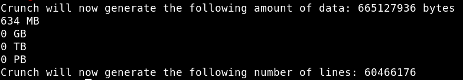
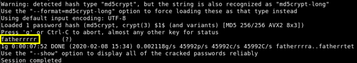

4.4 Create dictionary with Crunch
a) On the Kali Machine run the following code to create a 10-character long password dictionary.
$ crunch 10 10 aefhrt > dict.txt
Output:

b) Crack the “hash” file with “john” using our custom wordlist “dict.txt”.
$ john --wordlist=dict.txt
hash
Have a coffee!

Username: “douglas”
Password: “fatherrrrr”
Index